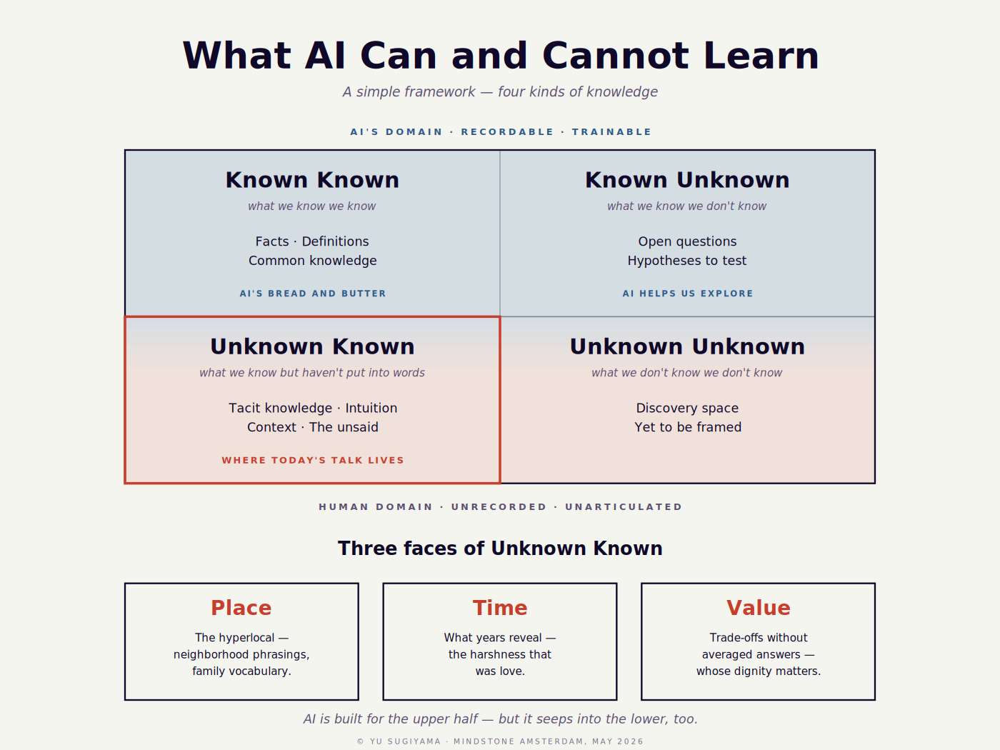
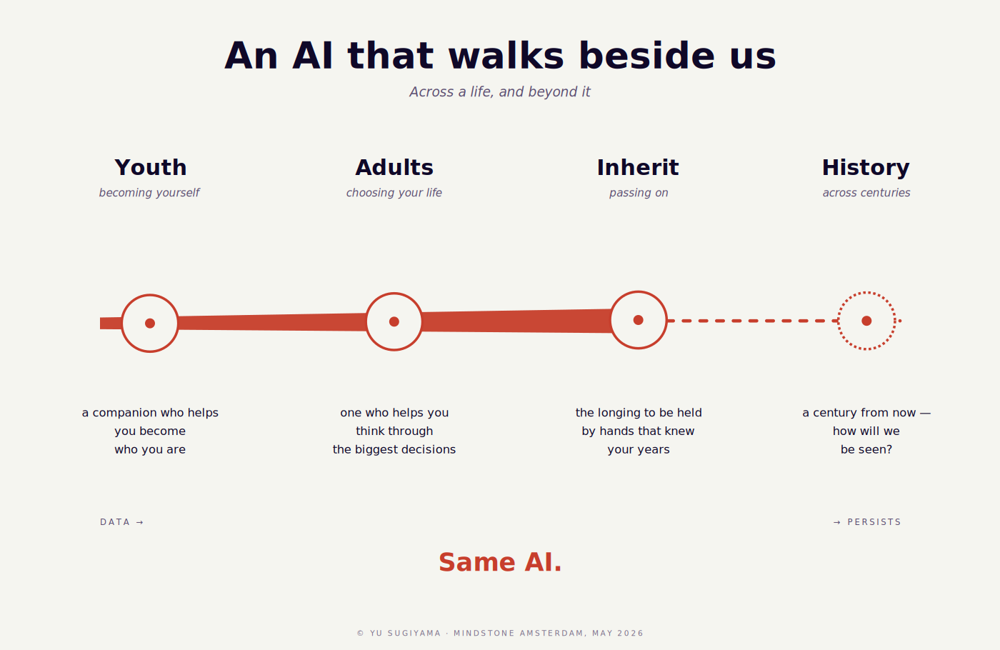
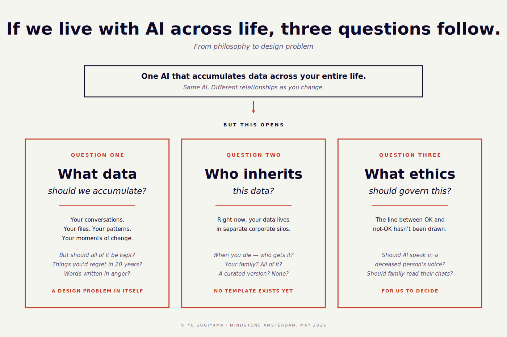

Mindstone Amsterdam · May 20, 2026
The hard part isn't the code. It's knowing what to say.
Yu's research on digital legacy and AI companionship opens the bigger question: what does it mean to live with AI across a lifetime? These three frames set the context for everything that follows.



Most people use AI like a search engine. One question, one answer, move on. The problem is that every conversation begins from zero. The model has no memory of who you are, what you are working on, or what kind of answer is actually useful to you.
The people getting real value have built something around the model. Not necessarily code. A system. Click through the four layers below.
Selected Layer
Before AI can help well, it needs a usable picture of who it is helping. Identity is the layer that makes the answers feel like they were written for a person instead of for a generic internet average.
Start with one file. A plain text document that describes how you think. Copy it into your AI tool's custom instructions or project settings. The model reads it before every conversation. Without it, you're a stranger every time.
The technical part takes an evening. The hard part is knowing what to write — because most people have never had to answer these questions explicitly.
Template
# [Your Name] — AI Identity File
## Who I am
[Role, domain, stage, what you already know, and what not to over-explain]
## How I think
[How you process information when something is unclear. Gap-first? Systematic? Verbally?]
## What I value
[Concrete values in your work. Tangible impact? Speed? Precision? Honest critique?]
## How I decide
[Under uncertainty, what should the AI do: walk through the problem, compare options, recommend, wait?]
## What I use AI for
[Thinking partner, drafting, planning, coding, reviewing, or something else]
## What annoys me
[What makes answers useless for you: hedging, jargon, flattery, too much structure, vagueness]
## Tone and style
[Short or long? Conversational or formal? Prose or bullets?]
## Current focus
[What is live right now. Update this every few weeks.]
## Hard constraints
[What AI should never do on your behalf without asking first.]A real example
How I think: I find the gap first, then explore it slowly and steadily. I question assumptions before accepting them.
What I value: Tangible impact over abstract cleverness. Honest answers over polished ones. Naming things well.
How I decide: Walk me through the problem before you give me a plan. If I push back, it usually means something does not add up.
Tone: Short sentences. No buzzwords. Casual but precise. Back claims with something concrete.
Current focus: Active job search, one research follow-up, and a system idea from a recent hackathon worth developing further.
Most people discover they have never answered those questions explicitly. That is the work. The AI setup is almost secondary.
ChatGPT: Settings → Personalization → Custom Instructions → paste your file
Claude.ai: Create a Project → Add project instructions → paste your file
Different sessions need different opening frames. A good opener tells the model what kind of help you want before it starts guessing.
Planning (figuring something out)
Execution (you know what you want)
Review (checking what you have)
If you prompt one question at a time with no context, you are doing the work of the system manually on every interaction. You are the harness.
Once the layers are in place, execution gets easier and the hard questions move upward. What is worth building. What does good look like. Is this actually what I meant. That is the shift from user to director.
You already have Claude Code running. This track is about the system you build around it: files, rituals, and patterns that turn a generic model into something that works with how you think.
The four layers stay the same. The implementation changes. Click through the stack for the developer version.
Selected Layer
For developers, identity usually becomes a project file. It tells the coding agent how to behave before a single tool call happens: when to ask, when to push back, how surgical to be, and what quality bar to apply.
A plain text file at your project root. Claude reads it before every conversation. For global defaults, put it in ~/.claude/CLAUDE.md.
Template
# CLAUDE.md — 12-rule template
These rules apply to every task in this project unless explicitly overridden.
Bias: caution over speed on non-trivial work. Use judgment on trivial tasks.
## Rule 1 — Think Before Coding
State assumptions explicitly. If uncertain, ask rather than guess.
Present multiple interpretations when ambiguity exists.
Push back when a simpler approach exists.
Stop when confused. Name what's unclear.
## Rule 2 — Simplicity First
Minimum code that solves the problem. Nothing speculative.
No features beyond what was asked. No abstractions for single-use code.
Test: would a senior engineer say this is overcomplicated? If yes, simplify.
## Rule 3 — Surgical Changes
Touch only what you must. Clean up only your own mess.
Don't "improve" adjacent code, comments, or formatting.
Don't refactor what isn't broken. Match existing style.
## Rule 4 — Goal-Driven Execution
Define success criteria. Loop until verified.
Don't follow steps. Define success and iterate.
Strong success criteria let you loop independently.
## Rule 5 — Use the model only for judgment calls
Use me for: classification, drafting, summarization, extraction.
Do NOT use me for: routing, retries, deterministic transforms.
If code can answer, code answers.
## Rule 6 — Token budgets are not advisory
Per-task: 4,000 tokens. Per-session: 30,000 tokens.
If approaching budget, summarize and start fresh.
Surface the breach. Do not silently overrun.
## Rule 7 — Surface conflicts, don't average them
If two patterns contradict, pick one (more recent / more tested).
Explain why. Flag the other for cleanup.
Don't blend conflicting patterns.
## Rule 8 — Read before you write
Before adding code, read exports, immediate callers, shared utilities.
"Looks orthogonal" is dangerous. If unsure why code is structured a way, ask.
## Rule 9 — Tests verify intent, not just behavior
Tests must encode WHY behavior matters, not just WHAT it does.
A test that can't fail when business logic changes is wrong.
## Rule 10 — Checkpoint after every significant step
Summarize what was done, what's verified, what's left.
Don't continue from a state you can't describe back.
If you lose track, stop and restate.
## Rule 11 — Match the codebase's conventions, even if you disagree
Conformance > taste inside the codebase.
If you genuinely think a convention is harmful, surface it. Don't fork silently.
## Rule 12 — Fail loud
"Completed" is wrong if anything was skipped silently.
"Tests pass" is wrong if any were skipped.
Default to surfacing uncertainty, not hiding it.This layer is project-scope dependent. There is no single best memory system. The right one depends on how much context you have, how structured it is, and whether the main problem is retrieval, continuity, or understanding.
Why memory matters — a concrete example
At a recent hackathon, the challenge was building an AI agent that autonomously manages a restaurant: pricing, staffing, inventory, all decided by the agent with no human in the loop. The hardest problem wasn't the strategy. It was memory. Between each turn of the simulation, the model remembers nothing.
The solution: the agent wrote structured notes to itself every round. What it observed. What worked. What to watch for. By day ten, it had built its own institutional knowledge of how that restaurant operated.
The same principle applies to your Claude Code setup. The memory system is the mechanism that lets Claude accumulate context over time — so each session builds on the last instead of starting from zero.
Good default for small to medium projects. Use it when the main need is continuity: live decisions, confirmed patterns, and what changed since the last session.
Best when the project grows into a long-lived knowledge base. Use it when you want human-readable notes, links between ideas, and a system that compounds over months rather than sessions.
Use it when the corpus is larger, messier, or spread across many documents and you need retrieval with graph-aware structure instead of reading everything directly.
Use it when the challenge is understanding relationships across code, docs, diagrams, screenshots, or video. It is especially strong when structure is the problem, not just recall.
The biggest win is not one perfect prompt. It is a repeatable opening and closing ritual that forces the agent to orient itself before work starts and to leave useful context behind when work ends.
Session-start
A pre-session briefing skill that reads project memory, the project instructions file, session handoffs, and git state before you code. The output is a practical briefing: what shipped yesterday, what today should aim at, where partner or branch integration might break, and the questions you forgot to ask.
The point is simple: do not let the model begin from vibes. Make it read the current state first.
Session-wrap
An end-of-session ritual that turns the current state into a clean handoff. It checks git, summarizes what was actually built, proposes the right commit shape, updates memory, writes partner-facing context, and flags stale files or loose ends.
This matters because the next strong session usually depends on the previous clean exit.
Planning opener
Execution opener
Review opener
The most underused feature for non-engineers. The workflow:
This shifts Claude from autocomplete to thinking partner with selective execution. The execution happens faster because the thinking happened first.
Add a macOS notification when Claude stops or needs input. Two minutes of setup. Changes how every session feels — you stop watching a screen and start doing something else while it runs.
The point isn't the notification. The point is that every small deliberate customisation compounds. That's what building a system around the intelligence looks like — not one big setup, but a series of small deliberate choices that accumulate over time.